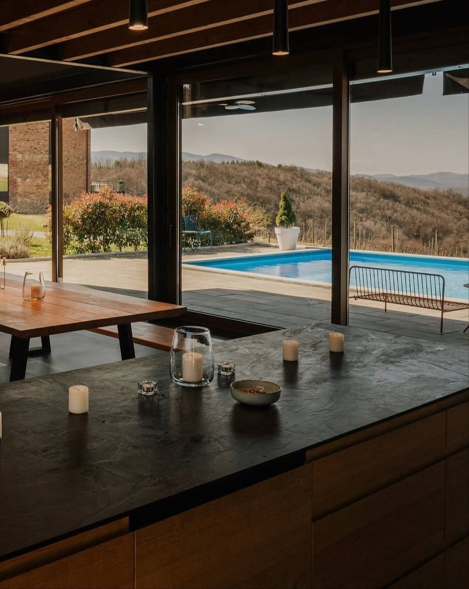
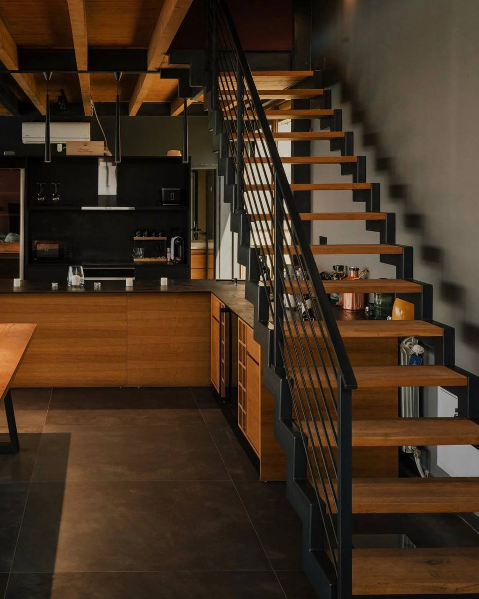
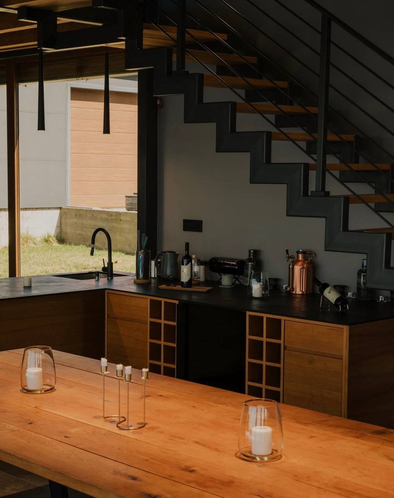
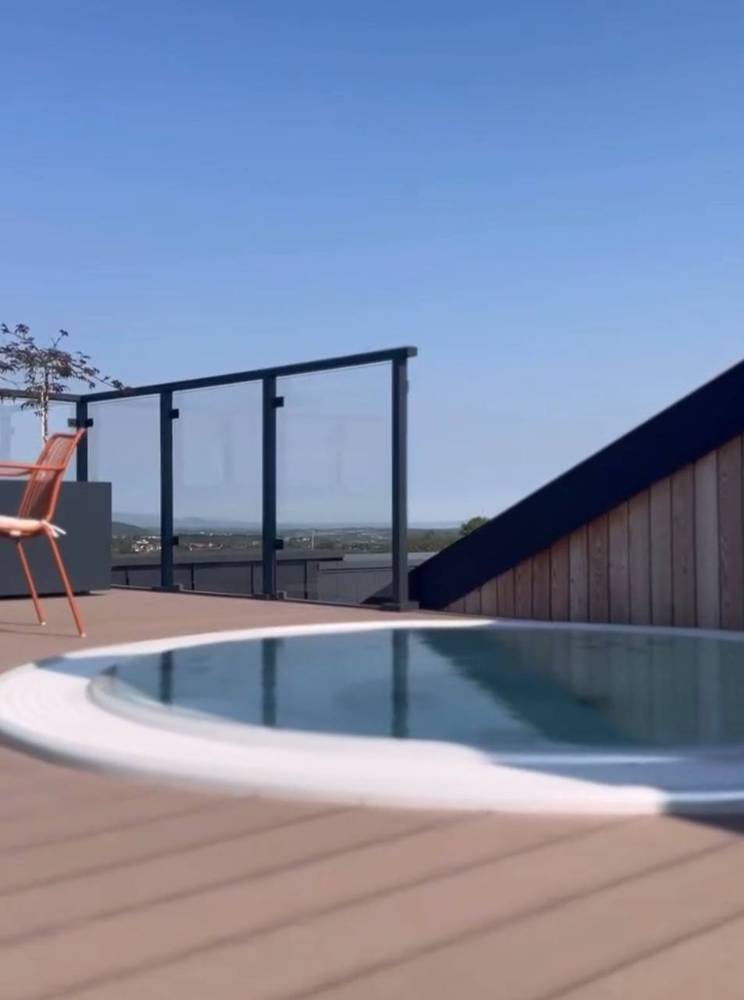

Naši apartmani spajaju moderan dizajn sa toplinom drveta i kamena, nudeći gostima miran odmor okružen vinogradima i brdima Šumadije. Svaki detalj je osmišljen da pruži udobnost uz autentičan doživljaj vinarskog imanja.

Otvoren prostor za kuhinju i trpezariju pruža pogled na bazen i okolne vinograde. Velike staklene površine povezuju enterijer sa prirodom, čineći svaki obrok posebnim doživljajem.


Kombinacija drveta i crnog metala prati se kroz ceo prostor, od stepeništa do kuhinjskih elemenata. Mali bar sa vinskom policom dopunjuje opuštenu atmosferu apartmana.

Privatna terasa sa manjim bazenom pruža savršeno mesto za opuštanje uz pogled na okolna brda. Idealno mesto za jutarnju kafu ili večernje uživanje uz čašu vina.